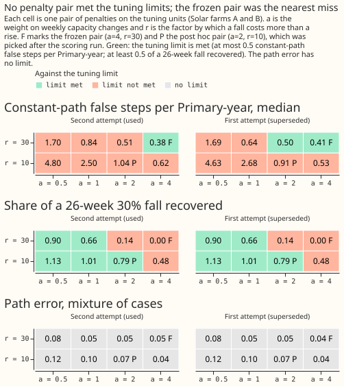
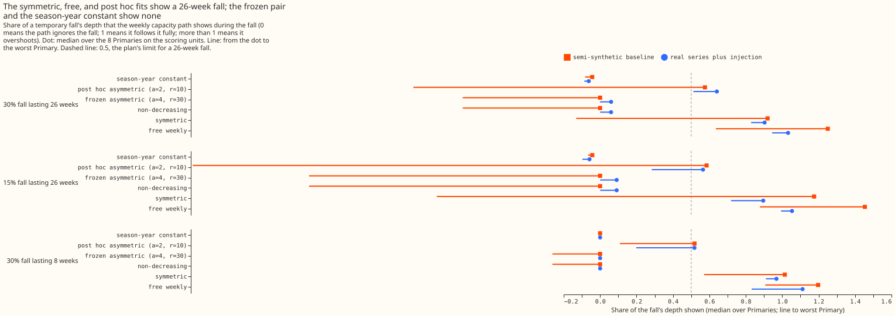
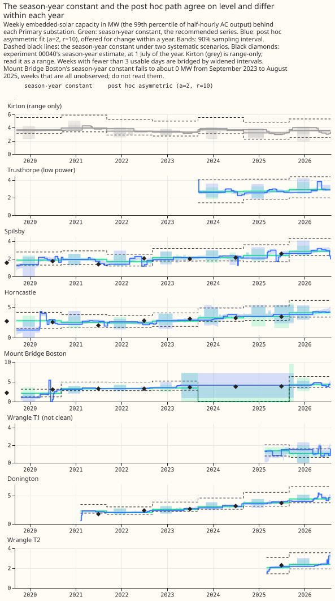

Experiment 45 (PVDIS-4): a weekly capacity series that rises easily and falls reluctantly
Weekly changes in embedded solar capacity cannot yet be read from the Primary-substation data at the accuracy a weekly series needs. For SW2-10, use one capacity per season-year as the solar capacity input, and read it as a range. SW2-10 is the planned experiment in the switching work that fits a weather baseline, embedded solar capacity, and each labelled transfer of load in one linear fit. A season-year is one 12-month period, and the season-year constant is one capacity per season-year with no weekly freedom. The next approaches to try are a penalty set separately for each Primary substation, and step detection that fires only above about 25% to 30% of capacity.
The verdict is refuted, because no pair of penalty settings on the grid met the limits fixed in
advance for tuning. We asked whether the amount of embedded solar behind each of 8 Primary
substations (substations that feed 11 kV circuits from the 33 kV distribution network) can be
tracked week by week. Embedded solar is solar connected inside the distribution network, mostly
unmetered by NGED, and its capacity here means the 99th percentile of its half-hourly AC output, in
MW. A weekly fit has two penalty settings: a sets the penalty on a weekly rise in capacity, and
r is the factor by which a fall is penalised more than a rise. The limits were at most 0.5 false
steps per Primary-year at the median Primary (a false step is a rise or fall of 10% of capacity
found on a series whose true capacity is constant), at most 1.0 at the worst Primary, and at least
0.5 of a 30% fall lasting 26 weeks recovered. The pair with the smallest shortfall (a=4 and r=30)
was frozen, which means it was chosen on tuning units before the scoring run. It recovered 0.000 of
the fall and gave a median of 0.66 false steps per Primary-year. A looser pair chosen after the
scoring run (a=2 and r=10) recovered 0.576 of the fall and gave a median of 1.22 false steps.
The comparison with the season-year constant is not what decides the verdict, and the two
baselines used to score it disagree. The path error is the mean absolute gap between the fitted
and the true weekly capacity, as a share of the true mean capacity. On the semi-synthetic baseline,
which is the worse of the two scorings for the frozen fit and so the one condition (i) uses, the
median path error on ramps and steps was 0.027 for the season-year constant, 0.040 for the frozen
weekly fit, and 0.159 for a weekly fit with no penalty. No weekly fit beat the constant there, but
that baseline favours the constant by construction, because it is built by subtracting the
season-year constant fit. On the real series plus injection, every weekly fit beat the constant on
ramps and steps (0.012 to 0.017 against 0.020), and the free and symmetric fits also beat it on
steps and falls. The comparison also points the same way as the verdict on the plan's main
interval, which resamples the 8 Primaries only: the lower limit of C2 (the relative change in path
error against the constant) is +0.029, above 0, so the clause "the asymmetric fit is worse than the
yearly constant" fires as a second route to refuted. The two-way interval, which also resamples
farm-seeds, is [-0.078, +0.773] and contains 0. The experiment's reason for refuted is the
tuning-limit route.
The experiment could not tell whether a better-tuned penalty would see a real fall in capacity, such as a feeder reconfigured permanently, or whether a penalty set per Primary would work. The one pair that followed falls (a=2 and r=10) was chosen after the scores were seen, and a penalty set per Primary was not tested.
Four further findings limit what the series can be used for. The smallest step that the frozen pair detected in 80% of injections is above 25% of capacity at all 8 Primaries in both seasons: at 6 Primaries no step of 30% or less reaches 80%, and at the other two 30% does from April to September only. The free weekly fit reaches 80% for 5% steps at 3 of the 8 Primaries from April to September, and for 10% steps at 5, but with a median of 11.6 false steps per Primary-year. The latest week of a real-time estimate had 3.63 times the path error of the same week in the final fit. The 90% intervals covered 0.62 of the weeks without a step and 0.35 of the weeks with a step. The three outside checks (national statistics, the Feed-in Tariff register, and the Embedded Capacity Register) each count only part of the installed solar, so they can neither confirm nor refute the series.
The plan's literal clause order gives inconclusive, and refuted applies instead. The first
clause (the smallest detectable step exceeds 25% of capacity at 5 or more Primaries in every
season) holds, but it was evaluated on a degenerate pair. With no feasible pair, the frozen
configuration fell back to the pair nearest the limits (a=4, r=30), which scores the same as the
strictly non-decreasing fit and detects 0.28 of steps from April to September and 0.23 from October
to March. refuted applies for two reasons. The plan says that when no pair on the grid meets both
tuning limits, the verdict is refuted for the asymmetric design and the limits are not relaxed.
And the detection failure belongs to the penalty, not to the data: the free weekly fit detected
0.85 of steps from April to September and 0.75 from October to March, with a median of 11.6 false
steps per Primary-year.
Terms used on this page
- Unit: one solar farm's recorded output, injected at one Primary substation with one path seed in one case (a ramp, a step, a temporary fall, a transfer, a seasonal load, or a constant path). Tuning units use Solar farms A to C and scoring units use Solar farms D to F.
- Path error: the mean absolute gap between the fitted and the true weekly capacity, as a share of the true mean capacity. A path error of 0.10 means the fitted capacity is on average 10% of the true mean capacity away from the truth, which is 0.4 MW on a 4 MW series.
- Primary-year: one Primary substation observed for one year. False steps are counted per Primary-year.
- Placebo sky: the solar shape shuffled between days of the same month, so the true capacity is constant and any step the fit finds is false.
- Semi-synthetic baseline: the real power minus the fitted season-year-constant solar component, plus a known solar path, so the true capacity of every week is known.
- Real series plus injection: the real power with the injected path added, scored by comparing the fitted path with and without the injection.
- Frozen pair: the pair
(a, r)chosen on tuning units and written to a committed file before the scoring run.
What was fitted, and the two tuning attempts
Each weekly fit explains daylight power as a demand term minus one capacity per week times a solar
shape from the Copernicus Atmosphere Monitoring Service (CAMS), and the penalised fits penalise each
weekly change. The frozen pair is a=4 and r=30: a scales the penalty on a weekly rise in
capacity (in units of one weekly standard error), and r is the factor by which a fall is
penalised more than a rise. The comparison fits are a weekly capacity with no penalty (free
weekly), a symmetric penalty (r=1), a strictly non-decreasing capacity (r=infinity), and the
season-year constant. The penalty pair was chosen on tuning units (Solar farms A to C) and scored
once on scoring units (Solar farms D to F, 1,320 of the 1,344 planned units, because Solar farm E's
record is too short for 24 injections at Mount Bridge Boston).
The first tuning attempt was invalid and was redone, and the redone attempt is the one reported. The first attempt's semi-synthetic baseline subtracted the real series' fitted weekly capacity, which removed the weekly noise that is correlated with the solar shape, so the baseline was too clean. The second attempt subtracts the season-year constant fit, which keeps that noise, and scores the fit of baseline plus injection against the known path. The constant-path unit was also redefined after the first attempt's tuning results were seen. It first injected a constant capacity into a baseline that still held real growth within each year, so real rises counted as false steps. It now uses the placebo sky, so the true path is constant. The change was made on tuning units only, and the scoring units were never fitted before the pair was frozen. Neither attempt found a pair that met the limits, as the table shows.
| a | r | Path error, mixture (second attempt) | Constant-path false steps, median (second attempt) | 26-week fall recovered (second attempt) | Largest excess over a limit (second attempt) | Constant-path false steps, median (first attempt) | Largest excess over a limit (first attempt) |
|---|---|---|---|---|---|---|---|
| 0.5 | 10 | 0.119 | 4.800 | 1.132 | 7.182 | 4.630 | 7.239 |
| 0.5 | 30 | 0.083 | 1.696 | 0.903 | 4.149 | 1.691 | 3.806 |
| 1 | 10 | 0.096 | 2.500 | 1.006 | 5.751 | 2.677 | 5.866 |
| 1 | 30 | 0.054 | 0.841 | 0.657 | 1.975 | 0.636 | 1.975 |
| 2 | 10 | 0.066 | 1.043 | 0.787 | 2.719 | 0.915 | 2.662 |
| 2 | 30 | 0.046 | 0.511 | 0.135 | 1.517 | 0.499 | 1.377 |
| 4 | 10 | 0.045 | 0.620 | 0.476 | 1.117 | 0.529 | 1.141 |
| 4 | 30 | 0.045 | 0.382 | 0.000 | 0.888 | 0.414 | 1.141 |
No pair on the grid meets all three limits: pairs that follow a fall are too noisy, and pairs that
stay quiet do not follow a fall. The limits are at most 0.5 false steps at the median Primary, at
most 1.0 at the worst Primary, and at least 0.5 of a 26-week fall recovered. The excess column gives
the largest amount by which a pair misses any limit, in the units of that limit. Pairs that follow a
fall (the r=10 rows with a up to 2) are far too noisy. The a=4, r=30 pair stays quiet and does
not follow a fall (0.000). The a=4, r=10 pair comes closest on the fall, recovering 0.476 of the
26-week fall, but its false steps are 0.62 at the median Primary and 2.12 at the worst. The pair
a=4, r=30 had the smallest excess in the second attempt, so the configuration was frozen there as a
fallback, and it is the pair called "frozen" below. The pair a=2, r=10 was the pair chosen by an
earlier tuning run on a baseline without weekly noise (commit 75005575). It was scored afterwards
on the same scoring units, so every number for it is post hoc, and it is not part of the verdict.

Figure 6 shows that no cell of the grid is green in both rows of false steps and fall recovery. The frozen pair is marked F and the post hoc pair is marked P.
Scores on held-out injections
On the semi-synthetic baseline, no weekly fit beat the season-year constant on ramps and steps, and the free weekly fit was the worst. The table gives each fit's absolute score on the scoring units. Scores are medians over farm-seeds and cases within a Primary, then medians over the 8 Primaries. False steps are of 10% of capacity per Primary-year on the constant path, as median and worst Primary. Drift is the rise of the path over 5 years on a constant path, as a share of capacity. The fall column is the share of a 30% fall lasting 26 weeks that the path shows (0 means the path ignores the fall and 1 means the path follows the fall fully).
| Fit | Path error, ramps and steps (semi-synthetic) | Path error, ramps and steps (real series plus injection) | False steps, constant path (median, worst) | Drift on constant path | 26-week fall recovered |
|---|---|---|---|---|---|
| Season-year constant | 0.027 | 0.020 | 0.17, 0.25 | -0.037 | -0.043 |
| Frozen asymmetric (a=4, r=30) | 0.040 | 0.017 | 0.66, 1.43 | +0.137 | 0.000 |
| Strictly non-decreasing | 0.040 | 0.016 | 0.66, 1.43 | +0.137 | 0.000 |
| Symmetric (r=1) | 0.102 | 0.012 | 3.01, 6.29 | -0.026 | 0.920 |
| Free weekly | 0.159 | 0.014 | 11.60, 12.27 | -0.019 | 1.250 |
| Post hoc (a=2, r=10) | 0.064 | 0.013 | 1.22, 3.32 | +0.055 | 0.576 |
The real series plus injection reverses the ranking on ramps and steps, and the two baselines disagree. Every weekly fit scores 0.012 to 0.017 there, against 0.020 for the season-year constant. The free and symmetric fits also beat the constant on steps (0.009 and 0.010 against 0.014) and on falls (0.007 each against 0.035), while the frozen fit is worse on falls (0.039 against 0.035). The semi-synthetic baseline favours the constant by construction, because it subtracts the season-year constant fit and so removes that fit's own sampling error. The plan scores condition (i) on the worse of the two baselines, which for the frozen fit is the semi-synthetic baseline.
The frozen pair fails five of the six pre-registered conditions. Condition (i), a median path error of at most 0.15 on ramps and steps, passes at 0.040. A flat path that detects nothing scores 0.097 there, so condition (i) is nearly trivial. Condition (ii) needs the upper limit of C2 below -0.20, and C2 is +0.400. On the plan's main interval, which resamples the 8 Primaries only, C2 has 95% interval [+0.029, +0.634]. The two-way interval, which then resamples farm-seeds within each drawn Primary, is [-0.078, +0.773]. The post hoc pair's C2 is +1.193, with a Primaries-only interval of [+0.296, +1.708] and a two-way interval of [+0.272, +1.809]. Condition (iii), false steps, fails at a median of 0.66 and a worst of 1.43 on the constant path (the placebo sky gives 0.07 and 0.54). Condition (iv), the drift, is +0.137 on the constant path and +0.090 on the placebo sky against a limit of 0.05. Condition (v), the fall, recovers 0.000 of a 26-week fall and 0.000 of an 8-week fall. Condition (vi), interval coverage, is 0.620 of non-step weeks and 0.347 of step weeks.

Figure 7 shows the path error by family of injected change. For ramps the season-year constant scores 0.032 (95% interval 0.027 to 0.053), the frozen fit 0.041 (0.034 to 0.053), and the free weekly fit 0.151 (0.104 to 0.239). For steps the scores are 0.024 (0.018 to 0.043), 0.037 (0.026 to 0.052), and 0.164 (0.107 to 0.251). On the real series plus injection every fit scores between 0.009 and 0.026 on ramps and steps, because that scoring compares paths fitted with and without the injection. The verdict uses the worse of the two scorings.
The penalty does most of its work against noise: the frozen fit cut the free weekly fit's path error by 0.12. On steps of 10% or more, the frozen fit's path error minus the free weekly fit's is -0.120 (95% interval -0.212 to -0.069), and on ramps -0.110 (-0.198 to -0.066). The frozen fit and the strictly non-decreasing fit differ by 0.000 (-0.002 to 0.000) on temporary falls. The frozen pair is the strictly non-decreasing fit in practice.

Figure 9 shows that only the symmetric, free weekly, and post hoc fits follow a fall. The post hoc pair recovered 0.576 of a 30% fall lasting 26 weeks and 0.518 of one lasting 8 weeks, so the post hoc pair also follows a short fall, which the plan wanted held back (below 0.5).
The smallest detectable step of the frozen pair is above 25% of capacity. At the frozen pair, 6 of the 8 Primaries have no step size (5%, 10%, 20%, or 30%) detected in 80% of injections in either season, and 2 Primaries (Donington and Wrangle T2) reach 30% from April to September only. A 10% step, which was the step the series was meant to show, is detected in 0.00 to 0.33 of injections at every Primary. The free weekly fit detects far more steps, with many false steps: it reaches 80% for 5% steps at 3 of the 8 Primaries from April to September (and at 2 from October to March), and for 10% steps at 5 (and at 3), with a median of 11.60 false steps per Primary-year. The detection curves are in figure 8.

A real-time estimate is worse than the final fit. On injections, the latest completed week of a real-time vintage has a path error of 0.122, against 0.027 for the same week in the final fit (ratio 3.63, limit 2.0). The ratio falls to 2.43 at 8 weeks of age, 1.95 at 13 weeks, and 1.63 at 26 weeks (figure 12).

The intervals under-cover. The 90% residual block bootstrap refits the whole path. It covered 0.620 of non-step weeks and 0.347 of step weeks for the frozen pair, and 0.708 and 0.470 for the post hoc pair, against the plan's 0.85 to 0.95 and at least 0.60 (figure 13). The coverage is scored on 94 bootstrapped units. The plan said 96, but two Mount Bridge Boston units could not be built. Every interval is clipped to include the point estimate, and the clipping touched 12.0% of observed weeks for the post hoc pair, 3.4% for the frozen pair, 1.4% for the free weekly fit, and 0.0% for the season-year constant.

On the real series
On the real series the free weekly fit swings too much to read, and the season-year constant is the series to read. The count of weekly changes of 2% of capacity or more at Kirton is 105 rises and 113 falls for the free weekly fit over 359 weeks, 12 rises and 17 falls for the post hoc pair, 1 rise and 0 falls for the frozen pair, and 3 rises and 3 falls for the season-year constant. The season-year constant rises from 2.294 to 4.400 MW at Donington and from 2.080 to 4.241 MW at Mount Bridge Boston (means of the first and last 4 observed weeks). The recommended series for SW2-10 is the season-year constant, chosen after the held-out scoring results were seen.

Figure 14 shows that the season-year constant and the post hoc path agree on level from about 2021 and differ within each year. At the 2019 and 2020 starts they differ in level (means of the first 4 observed weeks): the season-year constant is 2.758 MW at Horncastle against 1.244 MW for the post hoc path, 1.847 against 1.196 MW at Spilsby, and 2.080 against 1.081 MW at Mount Bridge Boston. Mount Bridge Boston has 198 unobserved weeks of 354 (weeks with fewer than 3 usable days), and its season-year constant falls to about 0 MW from 2023-09-04 to 2025-08-25 (104 weeks, all unobserved). Those weeks must not be read.
The outside checks are partial counts and are descriptive. Of the 14 level comparisons against the national small-scale solar statistics (DESNZ), 3 pass, 9 fail, and 2 are report-only. Of the 27 Primary-years, the season-year constant lies inside experiment 00040's interval in 18, and the post hoc path in 19, both below the plan's 80% bar. The Embedded Capacity Register total is at or below the series' upper bound at 6 of 6 comparisons. Only the DESNZ local-authority series could be tested for growth (1 pass and 5 inconclusive), and the Feed-in Tariff register and the constituency table could not. Every source is a floor or a partial count, so a ratio below 1 is expected and a mismatch does not show the series is wrong (figure 16).

Limits that remain
The review of the code left these limits in place. Each affects how far a number can be trusted.
- The detection metric has no false-alarm control. A fit that rises at every week would count as detecting every step.
- Condition (i) is nearly trivial. A flat estimator scores 0.097 on ramps and steps, against the limit of 0.15.
- Path error and false steps are scored on observed weeks only. Mount Bridge Boston has 198 of 354 weeks unobserved.
- The post hoc intervals are clipped to the point estimate in 12.0% of weeks.
- The constant-path false-step threshold is reported on two bases. The median at the frozen pair is 0.66 when a step is 10% of the real series' mean capacity and 0.36 when it is 10% of the injected capacity. The post hoc pair gives 1.22 and 0.77. The condition uses the first basis.
- The season-year constant's own sampling error cancels by construction, because the baseline subtracts the season-year constant fit, which favours that arm on the semi-synthetic baseline.
- The drift limit has a floor for short series, and Wrangle T1 and T2 have only 76 and 74 weeks.
- The post hoc pair was chosen and scored after the frozen pair failed. No number for it carries the weight of a pre-registered score.
Figures
The four figures above carry the argument. The others are linked here.
- Figure 1: Raw: the model-free trend of the midday clear-minus-overcast gap
- Figure 2: Raw: one clear and one overcast week, in summer and winter
- Figure 3: Raw: usable daylight half-hours per Primary-week
- Figure 4: Raw: the free weekly capacity and its standard error by month
- Figure 5: Method: one injected path through five fits
- Figure 8: The detection curve by step size and season
- Figure 10: Transfers and seasonal load
- Figure 11: False steps on the placebo sky and the constant path, and the drift
- Figure 12: Real-time vintages
- Figure 13: Interval calibration
- Figure 15: The gap between the asymmetric and symmetric paths on the real series
- Figure 16: Outside checks
- Figure 17: Additivity of the fit


The experiment's printed reports and every number on this page are in the private folder
data/ml-experiments/00045-pvdis-4-weekly-capacity-asymmetric-l1/ (report.txt is the combined
report).
Plan
The question and why it is worth asking
The question is whether a weekly series of embedded solar capacity behind each Primary substation can be estimated well enough to show real steps and no invented ones. Experiments 00039 and 00040 gave one capacity per season-year, with a detection limit near 2.5% of capacity. NGED holds almost no information on unmetered solar, and a capacity that changes week by week would show when a large rooftop fleet or a farm below 1 MW connects. A free capacity per week would be too noisy. The standard error of a season-year, 1.2% of capacity, implies about 8.7% per week on average (1.2% times the square root of 52), and far more in winter, when the sun is low. A penalty on the weekly increments lets neighbouring weeks share evidence, so that the path steps only where the data support a step.
The maintainer decided that capacity may fall but reluctantly. The fit estimates the solar that the Primary's meter sees, which can fall when home batteries charge from midday solar, when a feeder is permanently reconfigured, or when a solar site is switched off for repairs. A strict non-decreasing constraint would lower past capacity to fit a fall. The penalty on a fall is therefore heavy and finite.
The aim is explanation and a capacity series, not forecast skill. Nothing here touches the production forecast. Experiments 00007, 00009, 00022, and 00031 found small or no forecast gains from solar inputs, and PVDIS-5 tests the forecast question using the vintages this experiment produces.
Size, answered against the five triggers
The experiment is complex, because three of the five triggers fire.
- What gets stored: yes. A private weekly capacity table and a table of real-time vintages under
data/ml-experiments/00045-pvdis-4-weekly-capacity-asymmetric-l1/, which SW2-10 reads. Nothing enters a production Delta table. - The production serving path: no. Not touched.
- A degradation rule: no. Not touched.
- More than one defensible design: yes. The estimator (half-hourly M1, daily sums, or the six-arm combination), the form of the penalty, the placement of the demand cells, and the bootstrap scheme each admit more than one defensible choice. The plan fixes each choice and gives the reason.
- Code whose callers cannot be named without searching: yes, for one work item. The register
loader moves from experiment 00031's folder into
packages/studies, and that change is a separate reviewed pull request (work item W0).
The process is therefore the full one: this Opus plan, a Sonnet code review before the run, Sonnet runs and write-up, a Sonnet check of the write-up against the printed report, and a Sonnet prose review. Opus reviews the result when it decides the next part of the series.
Earlier advice, followed and departed from
The plan follows nine items of earlier advice and departs from none.
- Followed: "Divide capacities fitted with M1 by 0.77" (00039): the series is divided by a recovery ratio measured on injected paths. "Do not read a capacity at Kirton as PV alone" (00039): Kirton keeps its status flag in every output. "Leave out the 8 MVA Primaries" (00039): the series covers the 8 Primaries metered in MW. "Treat injection as a test of the PV shape and the irradiance only" (00039): a penalised, constrained fit is nonlinear, so the plan scores the path difference and a semi-synthetic baseline, and adds an additivity check. "Leave Wrangle T1 out of any claim that a Primary is free of a cloud load" (00040): the status column says so. "Do not quote an embedded-solar capacity without a stated bound" (00040): three uncertainty terms are stated and never summed. "Report C as the capacity and keep M1d divided by R as a cross-check" (the experiment 00040 review): the weekly series is checked against C. "Calibrate ENS irradiance to CAMS" (00031): the weekly series uses CAMS only, and PVDIS-5 owns the calibration. "Treat the register as a weak prior at Primaries" (00031): the register check is a soft check.
Hypothesis and the five design choices
The estimator is the half-hourly fit M1, with one capacity per week and one set of demand cells per season-year. The fit is
power = cell(season-year, month, local half-hour, day type) + b times heating degree-days - c(w) times u + error,
where u is experiment 00039's unit PV shape from CAMS (the Copernicus Atmosphere Monitoring
Service) at the Primary, c(w) is the capacity of
week w (weeks start on Monday, Europe/London), and the cells are those of experiments 00039 and
00040. A season-year is the 12-month period that experiments 00039 and 00040 used for one capacity.
Keeping the cells per season-year means a slow rise in base demand cannot leak into the
capacity, and it keeps the recovery ratio of the weekly fit comparable with the season-year ratio.
The drawback is that a step at a month boundary is partly absorbed by the cell mean, so the injections
include steps placed on month boundaries (risk 2).
M1 is chosen over the daily fit and the six-arm combination for three reasons. The daily fit leaks a day-long cloud load at 3.4 MW per MW, against 2.2 for M1, so a weekly daily-sum fit has seven points per week and the highest exposure. The six-arm combination needs a ratio vector and a noise bootstrap for every arm at every week. The half-hourly fit recovers 0.77 of injected capacity, which the series corrects by dividing by a measured ratio. The season-year mean of the weekly series is checked against the six-arm C of experiment 00040 (check A0), so the series stays tied to the estimate that carries a bound.
The penalty is asymmetric L1 on weekly increments, with the capacity held non-negative. The objective is
0.5 times the squared residual, over the residual variance, plus lambda_up times the sum of the
rises plus lambda_down times the sum of the falls.
The problem is convex. The penalty is lambda_up = a times a Primary scale s_P and lambda_down =
r times lambda_up. The scale s_P is the median over weeks of the free weekly fit's standard
error, so that a is in units of one weekly standard error. For the scoring of a real-time
vintage, s_P and the recovery ratio are computed from data up to the vintage's origin only, never
from the full record. The grid is a in {0.5, 1, 2, 4} and r in {10, 30}, so the fall-to-rise
penalty ratio is at least 10 (the maintainer decided that falls are heavily penalised). The same
(a, r) applies to every Primary, to stop one Primary's noise from setting its own penalty. The
comparison fits are r = 1 (symmetric L1), r = 3, r = infinity (strictly non-decreasing),
a = 0 (free weekly), and the season-year constant. No convex-optimisation package
is installed, so the solver is a short ADMM routine in numpy, checked against scipy.optimize.linprog
in the self-tests (risk 13). The demand cells are projected out once per Primary, so the fit needs
only the weekly normal matrix (about 360 by 360) and one vector per series.
The tuning rule picks one (a, r) pair on tuning units. The pair minimises the median path
error over a mixture of ramps, steps, and a constant path, subject to two limits: at most 0.5 false
steps per Primary-year on the placebo sky and on constant injected paths from the tuning farms A to
C, and a 30% fall lasting 26 weeks recovered at 0.5 or more of its depth. Ties go to the larger
a. The tuning limits are the same as conditions (v) and (iii), so the scoring on farms D to F
tests generalisation to new farms and path seeds only. If no pair on the grid meets both limits,
the verdict is refuted for the asymmetric design, and the limits are not relaxed after any score
is seen. The pair is written to frozen_config.json. The tuning script and the scoring script are
separate commits, and the scoring script has never run before the commit of the frozen file.
The capacity unit is the 99th percentile of half-hourly AC output of the fleet, as in experiments 00039 and 00040. Installed DC capacity is larger. The conversion to DC is part of the outside check against DESNZ.
Data, weeks, and masks
- Series. The 8 Primaries metered in MW (time series 7 Trusthorpe, 8 Horncastle, 10 Spilsby, 12
Wrangle T1, 13 Wrangle T2, 16 Mount Bridge Boston, 17 Kirton, and 18 Donington) and the 6 solar
farms as injection sources. The farms appear only
as "Solar farm A" to "Solar farm F" (
studies.pv_dataset.pv_sites()labels), and their output is always normalised by the farm's own 99th percentile, never published in megawatts. - Inputs. The
frame.parquetof experiment 00039 (cleaned power, CAMS unit shape and irradiance at reliability 0.9 or more, ERA5 temperature, zenith under 75 degrees), read fromdata/ml-experiments/00039-pv-disaggregation-cams-injection/work/. Reading another experiment's private output is allowed. Importing its code is not, so the model code is copied into this folder for the third time (risk 7). - Weeks. 361 weeks from Monday 2019-09-02 to Monday 2026-07-27 (the last has 5 days). Each
Primary starts at its first week with at least 3 usable days. A week with fewer than 3 usable
days is
unobserved: the fit has no data term there, the penalty interpolates, and the output marks the row and widens its interval. - Switching mask. The logged closures, padded by 24 hours, are removed from every fit. The
intervals come from experiment 00037's
intervals.parquet, and the log ends on 2026-03-25. SW2-0b's labels replace the logs once they exist. Unlogged transfers stay in the data and are injected as a case. The first unit (U1) found four facts that the design must handle:- The logged-closure mask removes 40 to 48% of the daylight half-hours at Mount Bridge Boston, Wrangle T1, and Wrangle T2.
- 871 of the 2,166 farm-weeks drop out of injection, mostly at Solar farm E.
- Kirton's correlation of power with
upeaks at 08:00 UTC, not near 12:00 UTC. - The weekly fits must therefore tolerate weeks in which most daylight half-hours are masked, and Kirton is reported without a pass or fail.
- Polygons. The check already run in
e00045_polygon_check.pyfound 16 valid Primary polygons, overlaps under 0.3% of the smaller polygon, Mount Bridge Boston's point 95 m outside its polygon, and Wrangle T1 and T2 sharing one polygon. Wrangle T1 and T2 keep separate fits and are summed for any comparison against the shared polygon. - Validation before fitting. Row counts per Primary-week, duplicate keys, the hour-of-day
profile of the correlation of power with
u(peak near 12:00 UTC), the share of CAMS hours dropped per week, the timestamp scan (the injected recovery must peak at shift zero), and the count of unobserved weeks. The same step prints each of the six solar farms' date coverage against the 361 weeks. A farm-week in which the farm's output is missing on more than 2 days is dropped from that farm's injection units, and the number dropped is reported. Thedata-validationskill lists the checks.
Known-answer injection design
Every scored result comes from injected paths whose truth is known, scored on farms and path seeds that were not used for tuning. The hold-out is by farm and path seed only. The tuning and scoring units share the same 8 Primaries, dates, baseline noise, and demand cells, so the scoring tests generalisation to new farms and path seeds at the same Primaries, not to new Primaries. The main interval therefore resamples Primaries, and results are reported per Primary. The design has five parts.
- The baseline is semi-synthetic. For each Primary, the baseline series is the real power minus
the full-record fitted PV component (so it holds demand, noise, and any confound), plus a known
baseline PV path equal to the Primary's 2025/26 capacity from experiment 00040 times
u. The true capacity of every week is then known, level included. Removing the fitted PV component also removes any confound that is correlated with the PV shape, so recovery on this baseline is optimistic against experiment 00039's recovery ratio of 0.77 on real data. A second scoring uses the real series with the injected path added, and compares the fitted path with and without the injection, because the production series is fitted to real data that already holds unknown solar. Condition (i) is scored on both baselines and both are reported; the verdict uses the worse. The gap between the two scorings measures the departure from additivity. - Injected change. The injected output is minus the normalised output of one solar farm scaled by the true path, so that its 99th percentile equals the path's value in MW. Farm output is normalised, never published in megawatts.
- Cases. Each path is drawn with a fixed seed.
- Ramp: a rise of 25% or 50% of the baseline over 52 weeks.
- Step: a rise of 5%, 10%, 20%, or 30% at a random week, with half the steps placed in April to September, half from October to March, and one in four on a month boundary.
- Temporary fall: 30% for 8 weeks and 30% for 26 weeks, and a 15% fall for 26 weeks.
- Transfer: a share of 0.3 of another Primary's net power (including its solar) added for 30 days, once inside the 24-hour padded mask and once outside it, so that the size of the error from an unlogged transfer is measured. The truth is the share times the donor's baseline capacity.
- Seasonal load: a daytime load (08:00 to 20:00 local) of 10% of the baseline capacity with a summer-weighted yearly cycle, once independent of the weather and once scaled by the clear-sky index (a load that rises with sunshine). The truth is the unchanged baseline, so the score is the seasonal swing that creeps into the capacity path.
- Constant path: a constant capacity equal to the baseline. Its false steps and ratchet drift
are scored, together with the placebo sky. Design change: the constant-path unit is built on
the placebo sky, not from a farm's injected output. The PV shape
uis permuted among the days of each calendar month, and the baseline capacity times the permuted shape is subtracted from the real power. The real series' own growth is then uncorrelated with the permuted shape, so the true path is constant. The recovery ratio of the constant-path unit is fixed at 1, because the unit is built from the PV shape itself and not from a farm's output. The farm and the path seed still change the rows that the farm's gaps leave, and the path seed also changes the permutation.
- Hold-out. The tuning units use Solar farms A, B, and C and path seeds 0 to 3. The scoring units use Solar farms D, E, and F and path seeds 1000 to 1003, at all 8 Primaries. The unit count is 3 farms times 4 seeds times 8 Primaries times 14 cases (2 ramps, 4 steps, 3 temporary falls, 2 transfers, 2 seasonal loads, and 1 constant path) = 1,344 units in each set. Solar farm E, the worst case at 0.70 recovery, falls in the scoring set on purpose, and results are also reported without it. The recovery ratio of each Primary is measured on tuning units with a constant injected path and applied unchanged to the scoring units.
- Intervals. The main interval is a cluster bootstrap that resamples the 8 Primaries, 2,000 draws, at the 95% level. A two-way cluster bootstrap (Primaries and farms resampled independently) is reported beside it. With three scoring farms the farm margin is coarse, so the write-up also reports the seed-level spread.
Real-time vintages are scored on the same semi-synthetic units. The fit is repeated at origins
every 4 weeks over the last 3 years of the record, each truncated at its origin, with the Primary
scale s_P and the recovery ratio recomputed from data up to that origin, and the latest
complete week of each vintage is scored against the truth. The write-up reports the path error of
that week against the same week in the final fit, and the revision of the first estimate by the
age of the week (1, 2, 4, 8, 13, and 26 weeks).
The bootstrap is a residual block bootstrap that refits the whole path. Each draw resamples whole 7-day blocks of the penalised fit's residuals, taken from the same calendar month of any year of the Primary's record (so that winter noise stays winter-sized), adds them to the fitted values, and refits the path with the frozen penalties. Missing half-hours take a residual of zero. Each Primary and variant gets 200 draws for the real series, and each injection unit gets 100. The 5th and 95th percentiles give the 90% interval, and the 25th and 75th and the 10th and 90th give the calibration curve. The coverage of the truth is scored on 96 scoring units (the case families with a step, a ramp, a fall, and a constant path), separately at weeks with no true step and at weeks within 2 weeks of a true step. A bootstrap of a penalised fit at a boundary tends to under-cover, and the decision rule counts that as a finding. If coverage at non-step weeks is under 0.85, the write-up reports an inflation factor chosen on tuning units, labelled post hoc.
False steps are counted on two skies. One is experiment 00039's placebo sky, which permutes
the PV shape u across days within each month (200 permutations per Primary) and leaves the
power in place, so that the day-to-day link between cloud and power is broken and any step is false
by construction. A placebo step is also ignored in any week within 4 weeks of a rise of 10% or more
in the unpermuted real series, so that a real growth step is not counted as false. The other is the
constant injected path, whose baseline holds no real growth. A false step is a rise of at least 10%
of the Primary's mean real capacity over any 4 consecutive weeks (5% is reported as well). Both
skies also report the ratchet drift. Conditions (iii) and (iv) are scored on both skies, on farms D
to F for the constant path and on permutation seeds 1000 to 1099 for the placebo sky. Tuning uses
farms A to C and permutation seeds 0 to 99.
The detection limit of each Primary is the smallest step on the grid (5%, 10%, 20%, 30%) that the path shows as a rise of at least half the step within 3 weeks of the true date in at least 80% of the scoring injections. It is reported for April to September and for October to March separately.
Real series, three uncertainty terms, and the gap diagnostic
The real weekly series is fitted on all of a Primary's data, then divided by that Primary's recovery ratio. The production-style output is the real-time vintage at weekly origins, so a forecast date reads only what was known on that date.
The uncertainty statement keeps three terms apart and never sums them.
- Sampling: the 90% residual-block-bootstrap interval of the weekly capacity.
- Transfer from farms to rooftops: a scenario of plus or minus 10%, from experiment 00040's clean-Primary ratio of the daily to the six-arm capacity (0.92) and its per-farm spread.
- Undetected demand: two named scenarios from experiment 00040's table, an undetected day-long cloud load (capacity too high by the Primary's bound B at amplitude 0.25) and a load that rises with sunshine (capacity too low by 33% at amplitude 0.25).
The gap diagnostic compares the asymmetric path with the symmetric one on the real series. A Primary is flagged when the mean gap between the two paths is 5% of its capacity or more, or when the symmetric path falls by at least 10% for 8 weeks or more and the asymmetric path does not. The 5% threshold is the weekly detection floor predicted for a summer step. The flagged falls are listed for SW2-0b to check against switching labels. The write-up never presents a held fall as a real fall.
Status per Primary is carried from earlier results. Kirton is flagged and its series appears
with a grey band and the library range of experiment 00040 (1.2 to 4.4 MW in 2025/26). Trusthorpe is
low-power. Wrangle T1 is left-out of any claim that a Primary is free of a confound. The others
are clean. Most coastal Primaries (Skegness, Ingoldmells, and Chapel St Leonards) are metered in
MVA and outside this experiment.
Outside checks and tolerances, stated before any comparison
Three outside checks and one internal check are run, in order of strength. None alters the verdict.
None of the outside photovoltaic datasets is complete. The DESNZ tables, the Ofgem Feed-in Tariff (FiT) register, and the Embedded Capacity Register (ECR) each count a subset of the installed capacity, and the FiT database has not been updated for several years. Each outside figure is therefore a floor or a partial count. A mismatch between an outside figure and the weekly series does not show that the series is wrong, so every outside check is descriptive and cannot decide the verdict. The measured coverage gaps are these. The FiT report covers accreditations from 1 April 2010 to 31 March 2025, and its latest photovoltaic commissioning date is 24 March 2021 (the scheme closed to new applicants on 31 March 2019). The DESNZ constituency table is published for August 2026 and covers domestic installations only. The DESNZ local-authority table is at the end of 2025. The ECR as-of date is printed by the check, and the check reports it beside its result.
- DESNZ small-scale solar, at constituency and local-authority level. DESNZ publishes no table by lower-layer super output area (LSOA). We searched the DESNZ "Solar photovoltaics deployment" workbook (Energy Trends table 6.3), the "Renewable electricity by local authority" workbook, and the DESNZ sub-regional statistics pages, and found tables by parliamentary constituency (domestic installations only) and by local authority (all sizes, end of 2025). The LSOA files were downloaded for the area shares of the Primary polygons but are not joined to the DESNZ figures. Each Primary polygon meets 1 to 4 constituencies, and a constituency or local authority is scaled by the share of its area inside the polygon, so the check is coarse. The tolerance is wide and is fixed here, before any comparison. The expected peak AC output is the DC capacity times 0.70, with a range of 0.60 to 0.80 (experiment 00029 fitted farm DC-to-AC ratios of 1.12 to 1.42, an AC-to-DC ratio of 0.70 to 0.89, and a fleet of mixed orientations peaks lower than one farm). Tolerance: the ratio of the series' mean over the 12 months to the snapshot date to the expected peak lies in [0.67, 1.5], read at the constituency level for domestic capacity and at the local-authority level for all sizes. The comparison is reported for Spilsby, Horncastle, Mount Bridge Boston, Donington, Trusthorpe, and Wrangle T1 plus T2 against the shared polygon, and Kirton is reported without a range. The factor of 1.5 is the root of the summed squares of the stated uncertainties: sampling (15%), farm to rooftop (10%), undetected load (25%), and conversion (14%), about 33%. The check can catch only a gross failure, and because the tables are partial counts, a ratio above 1 is less alarming than a ratio below 1. Installations of 1 MW or more are metered by NGED and already removed from the Disaggregated Demand series, so the local-authority figure for all sizes is the less direct comparison.
- The Ofgem FiT register, as a second descriptive check. Each postcode district is allocated to the Primary polygons by the share of its postcode units that lie inside the polygon (Ordnance Survey Code-Point Open gives the unit positions, and no open polygon boundary for postcode districts was found). The register has three uses. First, a dated baseline of small-scale capacity before April 2019, summed over the districts of each polygon by commissioning date. Second, a growth curve of cumulative declared net capacity (the Ofgem name for AC capacity) up to 2019, compared with the weekly series over the same weeks: the signs of the growth must agree and the ratio must lie within a factor of 2. Third, the share of FiT capacity in installations under 50 kW, which the Embedded Capacity Register misses. There are two caveats. The FiT took no new installations after 2019, so the register is a floor from then on. Postcode districts do not align with the polygons, so the allocation adds error. The check has no pass or fail range of its own and is reported beside check 1.
- The Embedded Capacity Register (ECR) as a soft prior, not a floor. The check uses only
connected solar sites of 50 kW to under 1 MW, dated before each week, and first prints which date
columns the register holds and what each records (the reader lists a
Last Updatedcolumn, which is not a connection date). Tolerance: the register's total for a Primary does not exceed the series' upper 90% bound at 5 or more of the 6 comparisons. The register's median was 0.08 of effective capacity against 0.33 from the data in experiment 00031, so the check expects the register to sit well below the series. The step-date check uses only sites larger than the Primary's detectable step and compares the series' rise in the 4 weeks around each date with the rise at 1,000 random placebo dates. It is run only if the register holds a connection date and at least 5 sites qualify across the six comparisons, and otherwise is reported as not testable. - The season-year anchor (internal, A0). The mean of the weekly series over each season-year lies inside experiment 00040's 95% interval of C at the clean Primaries in at least 80% of Primary-years.
Growth-rate tolerances, fixed after the outside growth rates were extracted and before any
comparison with the weekly series. The script e00045_outside.py first writes
outside_growth.parquet, which holds each outside source's fractional growth per year, and only
then compares it with the series. A fractional growth per year is the least-squares slope of the
cumulative capacity in MW per year, divided by its mean level over the window, with both curves
sampled at every Monday. The window is the overlap of the source's coverage with the Primary's
series, and a growth rate over a window shorter than 1 year is reported but never tested. Wrangle
T1 and Wrangle T2 are summed against the shared polygon. The extraction showed that three of the
four sources cannot be tested for growth, and the rules below say so in advance.
- Ofgem FiT: no growth test. The weekly series starts in September 2019 or later, after the scheme closed to new applicants, so the register's cumulative curve is flat over the whole overlap (growth 0.00 per year at every Primary, and under 0.2 years at Donington). The plan's comparison of growth up to 2019 has no weekly series to compare against. The register's use is therefore limited to the pre-2019 baseline against the series' first 8 weeks (reported with no pass or fail range, as in check 2) and the share of capacity under 50 kW.
- DESNZ local authority (all sizes, year ends 2014 to 2025): growth test with the factor of 2. Let g_s be the series' growth and g_o the source's, both over the same window of at least 1 year. The check passes if g_o is positive and 0.5 ≤ g_s / g_o ≤ 2. It fails if g_s / g_o > 2. It is inconclusive if g_s / g_o < 0.5 or g_s ≤ 0, because the authority total includes the farms of 1 MW or more that NGED meters and that the Disaggregated Demand series does not hold, so the source can grow faster than the series for a reason that does not impugn the series. The authority is allocated to a polygon by the share of the authority's FiT capacity inside it, because no authority boundaries are held, so the allocation is coarse. Wrangle's window is under 1 year and is not tested.
- DESNZ constituency (domestic only): no growth test. The workbook holds the August 2026 table and the July 2026 table, one month apart, and DESNZ revises recent months upward, so a growth rate from them is not a growth rate. The table is used for the level check only.
- Embedded Capacity Register: no growth test. The register's only date column,
Last Updated, holds one value, 6 August 2026 (Excel serial 46240), for all 7,211 rows. It records the release date of the register and not a connection date, so the step-date check in check 3 is not testable, and the register is used for the level comparison only.
The level checks keep the tolerances stated above. The domestic constituency check uses the 12
months ending 31 July 2026. The local-authority check uses the 12 months ending 31 December 2025
and the year-end 2025 figure, and a Primary with fewer than 26 weeks of series in that period is
not tested. Both pass if the ratio lies in [0.67, 1.5] at an AC-to-DC ratio of 0.70, and both
report the ratio at 0.60 and 0.80. Kirton (status range-only) and Wrangle T1 (status not-clean) are
never scored. Wrangle T1 is still added to Wrangle T2, because T2 alone against the whole polygon
would compare unlike things, and that sum is reported with its not-clean component flagged. The
season-year anchor uses experiment 00040's 95% bootstrap interval of the headline capacity
(headline_low to headline_high; that experiment publishes no interval on the six-arm C
itself), for the season-years in which the series holds at least 40 weeks.
The outside files need maintainer attention only on licence and size.
- LSOA boundaries: Office for National Statistics (ONS) LSOA (2021) generalised-clipped boundaries and population-weighted centroids for England and Wales, from the ONS Open Geography Portal. The whole boundary file is expected to be tens of megabytes and the centroids a few megabytes (to be confirmed at download). The plan requests only the LSOAs that intersect the union of the 16 polygons (a few hundred features, under 5 MB) through the portal's feature service, and falls back to the full file.
- DESNZ tables: two spreadsheets of a few megabytes.
- Ofgem FiT report: three workbooks of about 35 MB each, and the Code-Point Open archive of about 14 MB. Ofgem's copyright page releases its material under the Open Government Licence, and the files download with no login or terms click-through.
- Licence: both are published under the Open Government Licence v3.0, which needs an acknowledgement and no account or signature. The ONS boundaries add "Contains OS data (c) Crown copyright and database right". The cost is nil, well under the £30 cap. The maintainer decides whether using an OGL file counts as accepting a licence in someone's name before the download runs.
What SW2-10 reads
Two private parquet files, with the columns below. The folder is
data/ml-experiments/00045-pvdis-4-weekly-capacity-asymmetric-l1/. Both files hold one row per
Primary, variant, and week, and both carry the same file metadata, which names the recommended
variant and defines each column.
capacity_weekly.parquet, the final fit on all data, with the columnsweek_start(Date, Monday, Europe/London),time_series_id(Int32),primary_name(String),variant(frozen,alt_post_hoc,season_year_constant, orfree_weekly),capacity_mw(Float64, the 99th percentile of the half-hourly AC output of the embedded solar, divided by the variant's recovery ratio),low_mwandhigh_mw(the 5th and 95th percentiles of the 200-draw residual block bootstrap, clipped to include the point estimate, and widened in unobserved weeks),status,unobserved(Boolean, true when the week has fewer than 3 usable days),recovery_ratio,rooftop_low_mwandrooftop_high_mw(the capacity minus and plus 10%),scenario_dayL_mwandscenario_sunload_mw(the capacity under each named systematic scenario, never merged into the interval), andrecommended(Boolean, true for the one variant SW2-10 should read).capacity_weekly_vintages.parquet, the same columns plusorigin_monday(Date): the fit at each origin using only data before that Monday, for the variantsfrozenandalt_post_hoc. Origins fall every 4 weeks over the last 3 years of the record, plus the final origin, solow_mwandhigh_mware null in this file. A forecast datedreads the rows whoseorigin_mondayis the last origin on or beforedand whoseweek_startis the latest week (the Monday seven days before the origin), and holds that value flat for the days after it.
The status column carries one label per Primary, as it appears in the file. The labels are
clean, low-power, range-only, and not-clean. SW2-10 uses rows with status clean or
low-power, reads range-only rows as a range (low_mw to high_mw) and never as a value, treats
not-clean rows as unavailable, and skips rows with unobserved true when it needs a measured
week. SW2-10 uses the vintage file for any held-out scoring. The path of the finished file goes to
the "Design: Switching event detection experiments" session when it exists.
Cores, time, and parallel work
The whole experiment fits in 4 cores and about 2.5 hours of wall time, if all 4 cores are free.
Each worker runs one thread (OMP_NUM_THREADS=1, OPENBLAS_NUM_THREADS=1, POLARS_MAX_THREADS=1),
four workers at a time, one output file per worker chunk written atomically, fixed seeds per job.
Check uptime first, because the slot's 4 cores are shared with PVDIS-3. If PVDIS-3 leaves only 2
cores free, the four-worker stages take twice as long and the total rises from 2.5 hours to about
4.5 hours; the implementer then runs two workers and does not start a stage that would still be
running when PVDIS-3 needs its cores back.
| Stage | Work | Workers | Estimate |
|---|---|---|---|
| Inputs and validation | read the frame, weeks, masks, figures 1 to 4 | 1 | 5 min |
| Self-tests | solver, linearity, known answers | 1 | 2 min |
| Tuning | 8 penalty pairs on 1,344 tuning units (the normal matrix is reused, so about 0.1 to 0.3 s per fit) | 4 | 10 to 15 min |
| Freeze | write and commit frozen_config.json |
1 | 1 min |
| Scoring and contrasts | the chosen pair and the four comparison fits on 1,344 scoring units | 4 | 15 to 20 min |
| Coverage bootstrap | 96 units times 200 draws | 4 | 15 min |
| Vintages on injections | about 38 origins times 8 Primaries times 12 units | 4 | 10 min |
| Real series | fits, 500-draw bootstrap per Primary, weekly-origin vintages, placebo sky (1,600 fits that rebuild the normal matrix) | 4 | 30 min |
| Outside checks | DESNZ, register, season-year anchor | 1 | 5 min |
| Report and charts | printed report, 17 figures | 2 | 10 min |
What runs side by side. Work items W0 (register move), U1 (inputs and raw figures), and U5a
(the download script) share no file and have no dependency on the solver, so three Sonnet agents
start together. The solver and self-tests (U2) come first for everything that fits. Go/no-go
before U3: in U2's self-tests, measure the seconds per fit at r = 30, a = 0.5 (the
slowest-converging corner of the grid). If the ADMM needs more than 10 times the 0.1 to 0.3 s per
fit in the table, the implementer stops and tells the manager before starting U3. After U2, U3
(injection, tuning, scoring) and U4 (real series, vintages, placebo) run in parallel, because they
read the same solver and write different files. Within a run, the tuning units, the scoring units,
the Primaries, and the bootstrap draws are independent jobs.
Work list, split into units a Sonnet agent can implement
Each unit is implemented by one Sonnet agent working from the files, and reviewed by a second Sonnet agent that reads the code for leakage (tuning units reaching the scoring set), for the fit stopping at the vintage origin, and for farm output reaching a chart in megawatts. No agent starts a sub-agent.
| Unit | What it builds | Files | Needs |
|---|---|---|---|
| W0 | The Embedded Capacity Register loader in packages/studies (merged in PR 1267). The file holds only the workbook reader. The Primary-name normalisation and the connected-solar filter are not in it, so U5b writes them in e00045_outside.py. |
packages/studies/src/studies/ecr_reader.py (merged in PR 1267) |
nothing |
| U1 | Inputs, weeks, masks, validation, and the raw-data figures 1 to 4 | ml-experiments/00045-.../e00045_common.py, e00045_inputs.py, e00045_raw_charts.py |
nothing |
| U2 | The weekly design, the demand-cell projection, the ADMM solver for asymmetric L1 with non-negativity, the five fits (free, symmetric, asymmetric, strictly non-decreasing, season-year constant), and the self-tests | e00045_model.py, e00045_selftest.py |
U1's common module |
| U3 | The injection builder (cases, semi-synthetic baseline, hold-out split), tuning, the frozen file, scoring, the contrasts, the coverage bootstrap, and vintages on injections | e00045_inject.py, e00045_tune.py, e00045_score.py, e00045_bootstrap.py |
U2 |
| U4 | Real-series fits, recovery-ratio correction, the 500-draw bootstrap, weekly-origin vintages, the placebo sky, the gap diagnostic, and the two output files | e00045_real.py, e00045_placebo.py, e00045_outputs.py |
U2, U3's recovery ratios |
| U5a | The download scripts for the LSOA files, the DESNZ tables, and the Ofgem FiT report with Code-Point Open, following the data-download skill, with a generated README |
e00045_fetch_lsoa.py, e00045_fetch_fit.py |
the maintainer's licence decision |
| U5b | The outside checks (DESNZ, FiT, register through studies.ecr_reader, the season-year anchor) |
e00045_outside.py |
U4, U5a, W0 |
| U6 | The printed report (every number the page quotes) and figures 5 to 17 | e00045_report.py, e00045_charts.py |
U3, U4, U5b |
| U7 | The write-up with its plain-language opening, the research-plan row and research-log entry, and the mkdocs.yml line |
docs/ml-experiments/00045-.../result.md, docs/ml-experiments/research-plan.md, docs/ml-experiments/research-log.md, mkdocs.yml |
U6 |
The order is W0, U1, and U5a together; then U2; then U3 and U4 together; then U5b and U6; then U7. Each unit is committed separately, and the plan commit with this page and the research-plan row comes first.
Figures, raw data first
All charts follow the dataviz skill (OCF-brand palette, sized to the text column, SVG optimised
with svgo). Farm output is normalised and labelled Solar farm A to F. Substations may be named.
- Raw: the model-free trend. For each Primary, the rolling 8-week mean of the midday gap between clear days (daily clear-sky index of 0.8 or more) and overcast days (0.3 or less), in April to September, from 2019 to 2026. Where the gap rises, the capacity rises.
- Raw: what a week of evidence looks like. One clear and one overcast week in summer and in winter at Donington, with power and CAMS irradiance on twin axes.
- Raw: coverage. A heat map of usable daylight half-hours per Primary-week, with masked closure days, dropped CAMS hours, and unobserved weeks marked.
- Raw: how much information a week holds. The free weekly capacity with its standard error at Donington, and the standard error by calendar month for all Primaries, with the implied smallest detectable step.
- Method: one injected path through five fits. A ramp, a step, and a fall at Donington with Solar farm D, drawn with the free, symmetric, asymmetric, strictly non-decreasing, and season-year fits.
- Method: the penalty grid. The tuning-set error and false-step rate over
(a, r), with the chosen pair marked. - Headline: path error by case family and fit, with 95% intervals, for the scoring units.
- The detection curve: the share of steps detected against step size, for April to September and October to March, one panel per Primary.
- Falls: the share of a temporary fall recovered by depth and duration, for the symmetric, asymmetric, and strictly non-decreasing fits.
- Transfers and seasonal load: the false step from an unlogged transfer against a masked one, and the seasonal swing that creeps into the path, for the weather-independent load and the sunshine-correlated load.
- False steps: the distribution over the 200 placebo permutations per Primary, the constant-path injections, and the ratchet drift.
- Real-time vintages: the first estimate against the final fit, and the revision by the age of the week, on injections and on the real series.
- Interval calibration: the coverage of the truth against the nominal level (50%, 80%, and 90%) at step and non-step weeks.
- Headline on real data: the weekly capacity of each Primary with its 90% band, experiment 00040's season-year C as points, Kirton in grey with its library range, and the two systematic scenarios as separate lines.
- The gap between asymmetric and symmetric paths on the real series, with held falls marked.
- Outside checks: the series against the DESNZ expected peak with the tolerance band, and the register total.
- Additivity: the fitted increment on the real series against the semi-synthetic score for the same injection.
Risks
- Winter weeks carry almost no information. Daylight is short and
uis small, so the path is set by the penalty from about November to February. The standard error by month (figure 4) and the seasonal detection limit state this, and the series marks wide-interval weeks. - Per-season-year cells absorb part of a step at a month boundary. One in four injected steps sits on a boundary. If the recovered size is under 0.75 of the true size there, the write-up reports it and the penalty cannot fix it.
- The asymmetric penalty ratchets on noise. Rises are lightly penalised and falls heavily penalised, so noise peaks stick. Decision-rule condition (iv) and figure 11 measure the drift. If condition (iv) fails, the next part may need a penalty on the level as well as the increments.
- The fit is not additive. The production series is fitted to real data that already holds unknown solar, so the semi-synthetic scoring and the real-plus-injection scoring are both reported, the verdict uses the worse, and figure 17 shows the gap.
- Unlogged switching produces false steps. The transfer case measures the size. The real series' detected steps must be checked against SW2-0b's labels once they exist, and a step that coincides with a labelled transfer is not a capacity change.
- A load that rises with sunshine looks like solar. It biases the level low and, if seasonal, adds a swing to the path. The seasonal-load case measures the swing. Nothing in the data sizes the real load, so the scenario columns carry it separately.
- The model code is copied for the third time. Experiments 00039, 00040, and now 00045 each
hold a copy of the cell, window, and least-squares code. A move into
packages/studiesis overdue and is a separate reviewed change, outside this experiment. - Only three scoring farms. The farm margin of the two-way bootstrap is coarse. The write-up reports results with and without Solar farm E and the seed-level spread.
- The outside checks are weak and partial. None of the DESNZ, FiT, and ECR datasets is complete, so each is a floor and a mismatch does not show the series is wrong. The DESNZ tolerance of a factor of 1.5 catches only gross failure, the DESNZ tables are constituency level (domestic only) and local-authority level and so need area scaling, the FiT took no new installations after 2019, postcode districts do not align with the polygons, and the register's date field may not be a connection date.
- The vintage end-of-record problem. Penalised fits are least constrained at the end. The ERA5 temperature that production would use arrives about 5 days late, which the vintage scoring ignores; dropping the temperature term moved C by 0.006 of capacity in experiment 00039.
- Kirton and Wrangle T1. Kirton's cloud load enters its weekly path as capacity, and Wrangle T1 has two years of data and a low signal. Both appear with their status, and neither supports a claim.
- CAMS dropouts. Reliability under 0.9 drops 9.7% of hours, up to 12.6% of daylight hours in December, so winter weeks may fall below 3 usable days.
- The solver is new. No convex-optimisation package is installed, and adding one changes
pyproject.toml, which belongs to the maintainer. The ADMM routine is checked againstscipy.optimize.linprogon a 30-week problem, against ordinary least squares ata = 0, and against a constant path at largea. A stopping tolerance that is too loose would show as a failed self-test. - CPU contention. The slot's 4 cores are shared with PVDIS-3. Check
uptimebefore each stage.
What the next experiment should answer
The next experiment should ask whether a penalty set per Primary from that Primary's own weekly noise, together with a rule that holds a fall for a stated number of weeks, can keep constant-path false steps at or below 0.5 per Primary-year while recovering at least 0.5 of a 26-week fall and less than 0.5 of an 8-week fall. The next experiment should test this alongside the season-year constant plus step detection that fires only for steps above 25% to 30% of capacity, on tuning and scoring units fixed in advance and with the false-step limit scored on both bases of the constant-path threshold. The comparison fits and the placebo-sky constant path should be reused, and the interval should be rebuilt and checked for coverage on the tuning units before it is reported. PVDIS-5 reads the season-year constant for now.